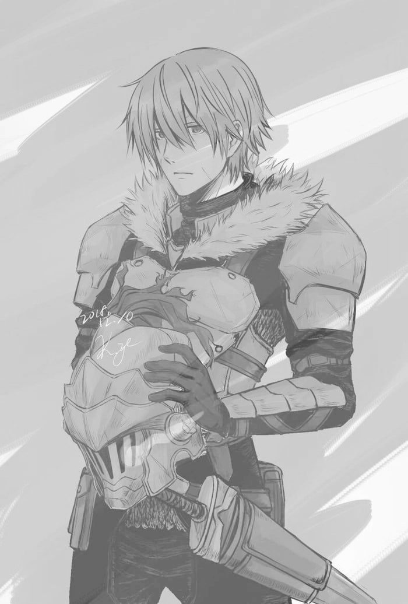

{% extends 'base.html' %}
{% block title %}Frankia | Erik Rahem{% endblock %}
{% block style %}
.pbody {
width: 50%;
overflow-wrap: break-word;
word-wrap: break-word;
word-break: break-word;
margin: auto;
white-space: pre-wrap;
}
b, h1 {
color: #0080FF;
transition: .5s;
}
b:hover, h1:hover {
color:white;
}
{% endblock %}
{% block content %}

Frankia
A personal fantasy project.
2D game
It requires a lot of sprites that I either have to learn drawing myself or work with someone for.
Satisfying visual violence with dark cartoonish blood effects like in Seal Hunter. It's a fun grinding play.
I have to explore the domain of story- and character-writing.
{% endblock %}